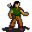

Fayvara¶{ .sprite }
| Type | NPC (can be spoken to; cannot be attacked) |
| Role | Teaches Heavy armor proficiency, Light armor proficiency, Shield proficiency, Unarmored fighting |
| Found in | Charwood, tradehouse0a |
| Entries in game data | 2 |
| Introduced | v0.7.0 or earlier |
2 entries in the game data
The game's data files define 2 separate characters named Fayvara. Andor's Trail stores a character as a new entry whenever it needs different behaviour, for example a different conversation at a later stage of a quest, a different location, or different combat statistics. Some entries represent the same person at different points in the story; others are different people who share a generic name. Here the entries differ in: conversation, location. This page combines them; each entry is described in its own section below.
| Entry | Type | Location | Role |
|---|---|---|---|
fayvara0 |
NPC | Charwood: minerhouse7 | – |
fayvara1 |
NPC | tradehouse0a | teaches Heavy armor proficiency, Light armor proficiency, Shield proficiency, Unarmored fighting |
Charwood, Minerhouse7 (fayvara0)¶
Entry ID: fayvara0 · Type: NPC
Location: Charwood: minerhouse7
Quests¶
- Destined for great things: stage 43
Dialogue simulator¶
Set the quest stages, items and other conditions that apply to your game, then start the conversation with Fayvara. The simulator applies the game's own rules: it performs the same silent checks, offers only the options that would be shown in the game, and applies their effects (quest stages, items handed over, rewards) as the conversation proceeds.
Rules verified against v0.8.18 game code (ConversationController.java) and dialogue data.
Dialogue (3 lines)
What the dialogue says, exactly as in the game files. Lines are listed once; links jump to the line a choice leads to.
fayvara0 Fayvara: “Please help me! I'm being held captive here.”
- “[Untie the ropes]” → fayvara0_1
- “I think I'll leave you right there.” → conversation ends
fayvara0_1 Fayvara: “Thank you, thank you! I'll make my way down the hill to the Charwood cabin. Meet me back there.”
- Next → fayvara0_2
fayvara0_2 (silent check: the first matching branch below is taken) — effects: sets stage 43 of Destined for great things
- branch 1 → NPC leaves
Version history¶
| Version | Change |
|---|---|
| v0.7.0 | Present in v0.7.0 (earliest release tracked) |
| v0.7.2 | Dialogue: 1 line changed |
Verified against v0.8.18 and every earlier release back to v0.7.0 (game data compared release by release).
Technical information (fayvara0)
| Entry ID | fayvara0 |
| Spawn group | fayvara0 |
| Loot table | – |
| Conversation | fayvara0 |
| Faction | – |
| Movement | – |
| Icon | monsters_tometik6:10 |
| Defined in | res/raw/monsterlist_v070_npcs.json |
Raw data:
{
"id": "fayvara0",
"name": "Fayvara",
"iconID": "monsters_tometik6:10",
"unique": 1,
"phraseID": "fayvara0"
}
Tradehouse0a (fayvara1)¶
Entry ID: fayvara1 · Type: NPC · Role: Teaches Heavy armor proficiency, Light armor proficiency, Shield proficiency, Unarmored fighting
Location: tradehouse0a
Quests¶
- Destined for great things: stages 90, 91, 92, 93, 94, 100, 110
Dialogue simulator¶
Set the quest stages, items and other conditions that apply to your game, then start the conversation with Fayvara. The simulator applies the game's own rules: it performs the same silent checks, offers only the options that would be shown in the game, and applies their effects (quest stages, items handed over, rewards) as the conversation proceeds.
Rules verified against v0.8.18 game code (ConversationController.java) and dialogue data.
Dialogue (53 lines)
What the dialogue says, exactly as in the game files. Lines are listed once; links jump to the line a choice leads to.
fayvara1 (silent check: the first matching branch below is taken)
- branch 1 (if reached stage 91 of Destined for great things) → fayvara1_0
- branch 2 (if reached stage 92 of Destined for great things) → fayvara1_0
- branch 3 (if reached stage 93 of Destined for great things) → fayvara1_0
- branch 4 (if reached stage 94 of Destined for great things) → fayvara1_0
- branch 5 → fayvara1_1
fayvara1_0 Fayvara: “Hello again, my friend. I hope that the things I have taught you have proven to be useful.”
- Next → fayvara1_s
fayvara1_1 Fayvara: “There you are! I had hoped to see you again after you helped me up in the Charwood heights!”
- Next → fayvara1_2
fayvara1_s (silent check: the first matching branch below is taken)
- branch 1 (if reached stage 70 of Destined for great things) → fayvara1_s0
- branch 2 → fayvara1_s1
fayvara1_2 Fayvara: “Thank you so much for helping to get me free! The stench of those monsters up there was awful.”
- Next → fayvara1_3
fayvara1_s0 (silent check: the first matching branch below is taken) — effects: sets stage 110 of Destined for great things
- branch 1 → fayvara1_9
fayvara1_s1 (silent check: the first matching branch below is taken)
- branch 1 (if reached stage 71 of Destined for great things) → fayvara1_s0
- branch 2 → fayvara1_s2
fayvara1_3 Fayvara: “I don't have much to give you in return, apart from my knowledge of how to use different kinds of armors. It's not much, but it's the least I can do.”
- “What can you teach me?” → fayvara1_4
fayvara1_9 Fayvara: “I can of course teach you the other types of armors as well, if you want. Seeing as how I already taught you once for free, I will require payment for teaching you further.”
- “What sort of payment?” → fayvara1_10
fayvara1_s2 (silent check: the first matching branch below is taken)
- branch 1 (if reached stage 72 of Destined for great things) → fayvara1_s0
- branch 2 → fayvara1_s3
fayvara1_4 Fayvara: “I can teach you how to better handle most types of armors, so that you can get even more proficient while wearing them.”
- “What armor types can you teach me?” → fayvara1_5
fayvara1_10 Fayvara: “We very rarely teach anyone outside our settlement, Falothen and I. I heard that Falothen taught someone a while ago and I heard that he was given five Oegyth crystals and 5,000 gold in return.”
- Next → fayvara1_11
fayvara1_s3 (silent check: the first matching branch below is taken)
- branch 1 (if reached stage 73 of Destined for great things) → fayvara1_s0
- branch 2 → fayvara1_s4
fayvara1_5 Fayvara: “I can teach you about using shields and parrying weapons to your advantage, or how to best use light or heavy armors. I can also teach you how to better handle blows when not wearing any armor at all - fighting unarmored, that is.”
- Next → fayvara1_6
fayvara1_11 Fayvara: “So I'm thinking something similar would suffice. Since as you're my friend, I won't charge as much as Falothen did but our settlement really needs the coin. Two of those crystals and 6,000 gold should be well enough.” — effects: sets stage 100 of Destined for great things
- “I don't have that on me right now. I'll be back.” → conversation ends
- “I'm not interested right now.” → conversation ends
- “I think I should hold on to those crystals some more.” (if carry 2× Oegyth crystal) → fayvara1_12
- “I might be interested.” (if carry 2× Oegyth crystal) → fayvara1_13
fayvara1_s4 (silent check: the first matching branch below is taken)
- branch 1 (if reached stage 74 of Destined for great things) → fayvara1_s0
- branch 2 → fayvara1_s5
fayvara1_6 Fayvara: “We only have time for one type of armor right now though, so think carefully on which one will suit you best.” — effects: sets stage 90 of Destined for great things
- “Tell me more about shields and parrying weapons.” → fayvara1_7_s
- “Tell me more about light armor.” → fayvara1_7_l
- “Tell me more about heavy armor.” → fayvara1_7_h
- “Tell me more about fighting without armor.” → fayvara1_7_u
- “I'll be right back.” → conversation ends
fayvara1_12 Fayvara: “Yes, those things sure are valuable.”
fayvara1_13 (silent check: the first matching branch below is taken)
- branch 1 (if have 6,000 gold) → fayvara1_14
- branch 2 → fayvara1_13q
fayvara1_s5 (silent check: the first matching branch below is taken)
- branch 1 (if reached stage 75 of Destined for great things) → fayvara1_s0
- branch 2 → fayvara1_9
fayvara1_7_s Fayvara: “Shields can be used in combination with your regular weapon, to block attacks from your opponent. Parrying weapons are mainly defensive, and can be use to block or divert your opponents strike. They will not block as well as a good…”
- Next → fayvara1_7_s1
fayvara1_7_l Fayvara: “Light armor comes in many varieties. From the simple leather armor to the light-weight steel ones. Compared to the heavy armors, you can generally be more flexible when using them, sometimes even increasing your movement speed.”
- Next → fayvara1_7_l1
fayvara1_7_h Fayvara: “Heavy armor, for when you really need protection. They generally provide the best protection around, making you withstand most attacks from your opponent without even getting a scratch.”
- Next → fayvara1_7_h1
fayvara1_7_u Fayvara: “Ah yes, the pure of mind do not need physical protection. As you know, wearing armor may slow you down - and by learning how to fight without wearing any, you can become even faster.”
- Next → fayvara1_7_u1
fayvara1_14 Fayvara: “Which type of armor are you interested in?”
- “Tell me more about shields.” → fayvara1_2nd_s
- “Tell me more about light armor.” → fayvara1_2nd_l
- “Tell me more about heavy armor.” → fayvara1_2nd_h
- “Tell me more about fighting without armor.” → fayvara1_2nd_u
- “I'll be right back.” → conversation ends
fayvara1_13q Fayvara: “It seems you do not have enough gold. 6,000 gold it is.”
fayvara1_7_s1 Fayvara: “I can teach you to better withstand attacks using a shield, or to divert blows using a parrying weapon, so that you don't take as much damage while using them.”
- “Sounds good. Teach me about shields and parrying weapons.” → fayvara1_7_s2
- “Let's go back to the other types of armors.” → fayvara1_6
fayvara1_7_l1 Fayvara: “I can teach you how to better block blows while wearing light armor, so that you don't get hit as often.”
- “Sounds good. Teach me about light armors.” → fayvara1_7_l2
- “Let's go back to the other types of armors.” → fayvara1_6
fayvara1_7_h1 Fayvara: “The downside is of course that they weigh a lot, which can slow you down. I can teach you how you can use that to your advantage, so that you can withstand attacks better and not be as slowed down as you would otherwise.”
- “Sounds good. Teach me about heavy armors.” → fayvara1_7_h2
- “Let's go back to the other types of armors.” → fayvara1_6
fayvara1_7_u1 Fayvara: “I can teach you the way of fighting without armor and how you can use that to your advantage so you don't get hit as often.”
- “Sounds good. Teach me about unarmored combat.” → fayvara1_7_u2
- “Let's go back to the other types of armors.” → fayvara1_6
fayvara1_2nd_s (silent check: the first matching branch below is taken)
- branch 1 (if reached stage 91 of Destined for great things) → fayvara1_2nd_no
- branch 2 → fayvara1_2nd_s0
fayvara1_2nd_l (silent check: the first matching branch below is taken)
- branch 1 (if reached stage 92 of Destined for great things) → fayvara1_2nd_no
- branch 2 → fayvara1_2nd_l0
fayvara1_2nd_h (silent check: the first matching branch below is taken)
- branch 1 (if reached stage 93 of Destined for great things) → fayvara1_2nd_no
- branch 2 → fayvara1_2nd_h0
fayvara1_2nd_u (silent check: the first matching branch below is taken)
- branch 1 (if reached stage 94 of Destined for great things) → fayvara1_2nd_no
- branch 2 → fayvara1_2nd_u0
fayvara1_7_s2 Fayvara: “[Fayvara teaches you the shield skill]” — effects: sets stage 91 of Destined for great things, +1 Shield proficiency
- Next → fayvara1_8
fayvara1_7_l2 Fayvara: “[Fayvara teaches you the light armor skill]” — effects: sets stage 92 of Destined for great things, +1 Light armor proficiency
- Next → fayvara1_8
fayvara1_7_h2 Fayvara: “[Fayvara teaches you the heavy armor skill]” — effects: sets stage 93 of Destined for great things, +1 Heavy armor proficiency
- Next → fayvara1_8
fayvara1_7_u2 Fayvara: “[Fayvara teaches you the unarmored combat skill]” — effects: sets stage 94 of Destined for great things, +1 Unarmored fighting
- Next → fayvara1_8
fayvara1_2nd_no Fayvara: “I've already taught you that skill.”
- “Let's go back to the other types of armors.” → fayvara1_14
fayvara1_2nd_s0 Fayvara: “Shields can be used in combination with your regular weapon, to block attacks from your opponent.”
- Next → fayvara1_2nd_s1
fayvara1_2nd_l0 Fayvara: “Light armor comes in many varieties. From the simple leather armor to the light-weight steel ones. Compared to the heavy armors, you can generally be more flexible when using them, sometimes even increasing your movement speed.”
- Next → fayvara1_2nd_l1
fayvara1_2nd_h0 Fayvara: “Heavy armor, for when you really need protection. They generally provide the best protection around, making you withstand most attacks from your opponent without even getting a scratch.”
- Next → fayvara1_2nd_h1
fayvara1_2nd_u0 Fayvara: “Ah yes, the pure of mind do not need physical protection. As you know, wearing armor may slow you down - and by learning how to fight without wearing any, you can become even faster.”
- Next → fayvara1_2nd_u1
fayvara1_8 Fayvara: “Well done. I hope that will be useful for you.”
- Next → fayvara1_s
fayvara1_2nd_s1 Fayvara: “I can teach you to better withstand attacks using a shield, so that you don't take as much damage while using them.”
- “Sounds good. Teach me about shields. Here are two Oegyth crystals and 6,000 gold as payment.” (if hand over 2× Oegyth crystal; pay 6,000 gold) → fayvara1_2nd_s3
- “Let's go back to the other types of armors.” → fayvara1_14
fayvara1_2nd_l1 Fayvara: “I can teach you how to better block blows while wearing light armor, so that you don't get hit as often.”
- “Sounds good. Teach me about light armors. Here are two Oegyth crystals and 6,000 gold as payment.” (if hand over 2× Oegyth crystal; pay 6,000 gold) → fayvara1_2nd_l3
- “Let's go back to the other types of armors.” → fayvara1_14
fayvara1_2nd_h1 Fayvara: “The downside is of course that they weigh a lot, which can slow you down. I can teach you how you can use that to your advantage, so that you can withstand attacks better and not be as slowed down as you would otherwise.”
- “Sounds good. Teach me about heavy armors. Here are two Oegyth crystals and 6,000 gold as payment.” (if hand over 2× Oegyth crystal; pay 6,000 gold) → fayvara1_2nd_h3
- “Let's go back to the other types of armors.” → fayvara1_14
fayvara1_2nd_u1 Fayvara: “I can teach you the way of fighting without armor and how you can use that to your advantage so you don't get hit as often.”
- “Sounds good. Teach me about unarmored combat. Here are two Oegyth crystals and 6,000 gold as payment.” (if hand over 2× Oegyth crystal; pay 6,000 gold) → fayvara1_2nd_u3
- “Let's go back to the other types of armors.” → fayvara1_14
fayvara1_2nd_s3 Fayvara: “[Fayvara teaches you the shield skill]” — effects: sets stage 91 of Destined for great things, +1 Shield proficiency
- Next → fayvara1_15
fayvara1_2nd_l3 Fayvara: “[Fayvara teaches you the light armor skill]” — effects: sets stage 92 of Destined for great things, +1 Light armor proficiency
- Next → fayvara1_15
fayvara1_2nd_h3 Fayvara: “[Fayvara teaches you the heavy armor skill]” — effects: sets stage 93 of Destined for great things, +1 Heavy armor proficiency
- Next → fayvara1_15
fayvara1_2nd_u3 Fayvara: “[Fayvara teaches you the unarmored combat skill]” — effects: sets stage 94 of Destined for great things, +1 Unarmored fighting
- Next → fayvara1_15
fayvara1_15 Fayvara: “Well done! You learn quickly.”
Version history¶
| Version | Change |
|---|---|
| v0.7.0 | Present in v0.7.0 (earliest release tracked) |
| v0.7.2 | Dialogue: 12 lines changed · text: “We only have time for one type of armor right now though, so think ca…” → “We only have time for one type of armor right now though, so think ca…” |
| v0.7.11 | Dialogue: 4 lines changed · text: “I can teach you about using shields to your advantage, or how to best…” → “I can teach you about using shields and parrying weapons to your adva…” · text: “I can teach you to better withstand attacks using a shield, so that y…” → “I can teach you to better withstand attacks using a shield, or to div…” |
| v0.8.18 | Dialogue: 7 lines changed · text: “It seems you do not have enough gold. 6000 gold it is.” → “It seems you do not have enough gold. {6000} gold it is.” · text: “We very rarely teach anyone outside our settlement, Falothen and I. I…” → “We very rarely teach anyone outside our settlement, Falothen and I. I…” |
Verified against v0.8.18 and every earlier release back to v0.7.0 (game data compared release by release).
Technical information (fayvara1)
| Entry ID | fayvara1 |
| Spawn group | fayvara1 |
| Loot table | – |
| Conversation | fayvara1 |
| Faction | – |
| Movement | – |
| Icon | monsters_tometik6:10 |
| Defined in | res/raw/monsterlist_v070_npcs.json |
Raw data:
{
"id": "fayvara1",
"name": "Fayvara",
"iconID": "monsters_tometik6:10",
"phraseID": "fayvara1"
}
Community notes¶
Written by players, not generated from game data. Observations: what players notice in-game · Lore: the in-world story · Trivia: real-world facts, references, development history · Theory / speculation: unconfirmed ideas; may just be unfinished content
Observations¶
No notes yet. Contributions are welcome: add a note.
Lore¶
No notes yet. Contributions are welcome: add a note.
Trivia¶
No notes yet. Contributions are welcome: add a note.
Theory / speculation¶
No notes yet. Contributions are welcome: add a note.
Data from v0.8.18